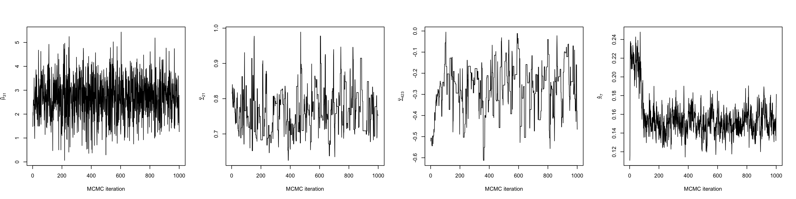
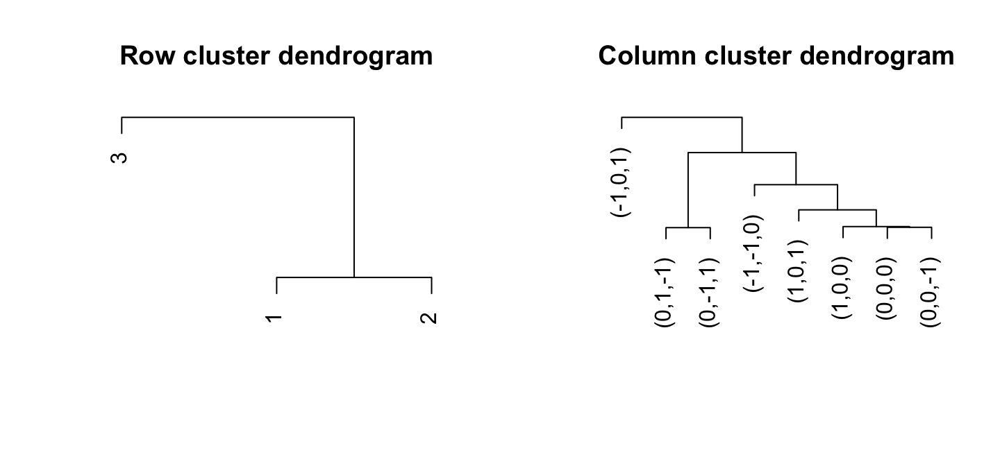
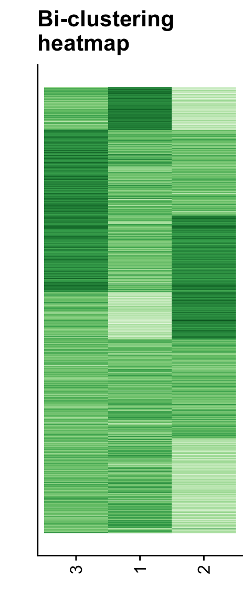
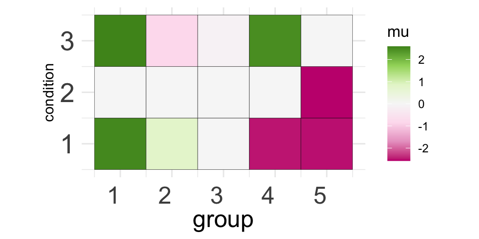
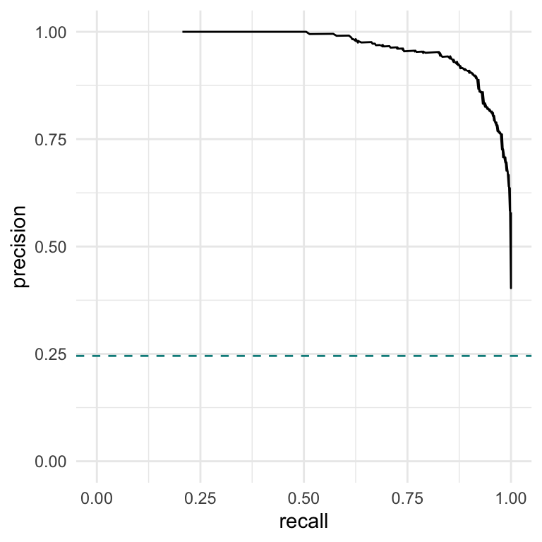

Last updated: 2020-07-08
Checks: 5 2
Knit directory: lieb/
This reproducible R Markdown analysis was created with workflowr (version 1.6.1). The Checks tab describes the reproducibility checks that were applied when the results were created. The Past versions tab lists the development history.
The R Markdown file has unstaged changes. To know which version of the R Markdown file created these results, you’ll want to first commit it to the Git repo. If you’re still working on the analysis, you can ignore this warning. When you’re finished, you can run wflow_publish to commit the R Markdown file and build the HTML.
Great job! The global environment was empty. Objects defined in the global environment can affect the analysis in your R Markdown file in unknown ways. For reproduciblity it’s best to always run the code in an empty environment.
The command set.seed(20190717) was run prior to running the code in the R Markdown file. Setting a seed ensures that any results that rely on randomness, e.g. subsampling or permutations, are reproducible.
Nice! There were no cached chunks for this analysis, so you can be confident that you successfully produced the results during this run.
Great job! Using relative paths to the files within your workflowr project makes it easier to run your code on other machines.
Great! You are using Git for version control. Tracking code development and connecting the code version to the results is critical for reproducibility.
The results in this page were generated with repository version ed24c1b. See the Past versions tab to see a history of the changes made to the R Markdown and HTML files.
Note that you need to be careful to ensure that all relevant files for the analysis have been committed to Git prior to generating the results (you can use wflow_publish or wflow_git_commit). workflowr only checks the R Markdown file, but you know if there are other scripts or data files that it depends on. Below is the status of the Git repository when the results were generated:
Ignored files:
Ignored: .DS_Store
Ignored: .Rhistory
Ignored: .Rproj.user/
Ignored: analysis/.DS_Store
Ignored: analysis/.Rhistory
Ignored: analysis/figure/
Ignored: analysis/pairwise_fitting_cache/
Ignored: analysis/preprocessing_cache/
Ignored: analysis/running_mcmc_cache/
Ignored: data/.DS_Store
Ignored: data/.Rhistory
Ignored: output/.DS_Store
Unstaged changes:
Modified: analysis/downstream.Rmd
Note that any generated files, e.g. HTML, png, CSS, etc., are not included in this status report because it is ok for generated content to have uncommitted changes.
These are the previous versions of the repository in which changes were made to the R Markdown (analysis/downstream.Rmd) and HTML (docs/downstream.html) files. If you’ve configured a remote Git repository (see ?wflow_git_remote), click on the hyperlinks in the table below to view the files as they were in that past version.
| File | Version | Author | Date | Message |
|---|---|---|---|---|
| Rmd | e4e50bd | hillarykoch | 2020-04-29 | fix factor releveling |
| html | e4e50bd | hillarykoch | 2020-04-29 | fix factor releveling |
| html | 1c43a7f | hillarykoch | 2020-04-29 | rebuilds the html because I forgot to |
| Rmd | 714f2b6 | hillarykoch | 2020-04-28 | update with testing section |
| html | 714f2b6 | hillarykoch | 2020-04-28 | update with testing section |
| Rmd | 4350be6 | hillarykoch | 2020-04-28 | add cluster merging |
| html | 4350be6 | hillarykoch | 2020-04-28 | add cluster merging |
| Rmd | bf87fa0 | hillarykoch | 2020-04-28 | add some downstream analysis |
| html | bf87fa0 | hillarykoch | 2020-04-28 | add some downstream analysis |
| Rmd | 30514e2 | hillarykoch | 2020-04-27 | update MCMC and outline downstrea, |
| html | 30514e2 | hillarykoch | 2020-04-27 | update MCMC and outline downstrea, |
| html | cc98d2b | hillarykoch | 2020-04-24 | replace cache and update to describe flex_mu |
| Rmd | 717e762 | hillarykoch | 2020-04-23 | add placeholder for downstream analyses |
| html | 717e762 | hillarykoch | 2020-04-23 | add placeholder for downstream analyses |
| Rmd | 2a75de4 | hillarykoch | 2020-02-20 | remove too-big header |
| html | 2a5b7c0 | hillarykoch | 2020-02-20 | Build site. |
| html | 3a9bf9d | hillarykoch | 2020-02-20 | Build site. |
| Rmd | a99d063 | hillarykoch | 2020-02-20 | add new page about downstream analysis |
| html | a99d063 | hillarykoch | 2020-02-20 | add new page about downstream analysis |
CLIMB’s output is nothing but the posterior MCMC samples of the parameters of the normal mixture (means, variance-covariance matrices, mixing weights, and cluster assignments). These samples can be used for clustering/classification, visualizations, and statistical inference. While there are many downstream analyses one could do with such output, here, we demonstrate implementations of several of the analyses used in the CLIMB manuscript.
First, let’s load in the MCMC we briefly ran on simulated data in the running the MCMC section.
chain <- readRDS("output/chain.rds")The first thing we should do make some trace plots for some of the parameters being estimated. This will help us decide when the chain has entered its stationary distribution. Here, we make plots of a mean, variance, covariance, and mixing weight.
# The mean in the first dimension of the third cluster
mu31 <- chain$mu_chains[[3]][,1]
# The variance of the first dimension of the second cluster
sigma21 <- chain$Sigma_chains[[2]][1,1,]
# The covariance between dimensions 2 and 3 in the fourth cluster
sigma423 <- chain$Sigma_chains[[4]][2,3,]
# The mixing weight of the seventh cluster
pi7 <- chain$prop_chain[,7]
| Version | Author | Date |
|---|---|---|
| bf87fa0 | hillarykoch | 2020-04-28 |
Looking at a few of these trace plots reveals that the chain achieves stationary around 200 iterations in. Therefore, we discard the first 200 iterations as burn-in, and do our analyses on the remaining 800.
burnin <- 1:200CLIMB can provide a bi-clustering of analyzed data. Row clusters come from the estimated latent classes, of course, though these classes can even be grouped by their similarity.
CLIMB uses a distance based on class covariances to cluster the dimensions (columns). The function compute_distances_between_conditions will compute these pairwise distances between conditions based on model fit. This was used in the CLIMB manuscript to determine the relationship among hematopoietic cell populations based on CTCF binding patterns.
CLIMB’s estimated classes naturally cluster the rows. However, the function compute_distances_between_clusters will compute distances between estimated clusters as well. This distance is based on a symmetrified theoretical Kullback-Liebler divergence.
par(mfrow = c(1,2))
# The figure isn't as exciting with simulated data
col_distmat <- compute_distances_between_conditions(chain, burnin)
hc_col <- hclust(as.dist(col_distmat), method = "complete")
plot(hc_col, xlab = "", ylab= "", axes = FALSE, sub = "", main = "Row cluster dendrogram")
row_distmat <- compute_distances_between_clusters(chain, burnin)
hc_row <- hclust(as.dist(row_distmat), method = "complete")
plot(hc_row, xlab = "", ylab= "", axes = FALSE, sub = "", main = "Column cluster dendrogram")
| Version | Author | Date |
|---|---|---|
| bf87fa0 | hillarykoch | 2020-04-28 |
These figures aren’t very thrilling on their own, but we can use them to make some nice heatmaps. CLIMB provides the function get_row_reordering to facilitate plotting the bi-clustering:
# Load back in the data
data("sim")
dat <- sim$data
# Get a row reordering for plotting
row_reordering <- get_row_reordering(row_clustering = hc_row, chain = chain, burnin = burnin)
# Melt (for ggplot2)
molten1 <-
reshape2::melt(data = dplyr::mutate(dat, "row" = row_reordering),
id.vars = "row")
# Rename the factor levels to match the dimensions
levels(molten1$variable) <- as.factor(paste(1:3))
# Plot the bi-clustering heatmap, like in the CLIMB manuscript
p1 <- ggplot(data = molten1,
aes(x = forcats::fct_relevel(variable, ~ .x[hc_col$order]), # Relevel factors, for column sorting on the plot
y = row, fill = value)) +
geom_raster() +
cowplot::theme_cowplot() +
theme(legend.position = "none", axis.ticks.y = element_blank(), axis.text.y = element_blank()) +
xlab("") + ylab("") +
theme(axis.text.x = element_text(angle = 90, hjust = 1, vjust = .5)) +
ggtitle("Bi-clustering\nheatmap") +
scale_fill_gradientn(colours=RColorBrewer::brewer.pal(9,"Greens"))
print(p1)
CLIMB allows you to merge similar groups for the sake of visualization, for examble on the Genome Browser. In the CLIMB manuscript, we merged clusters of CTCF binding patterns to color peaks more in a more parsimonious set of 5 groups on the genome browser. We show how to do this for an arbitrary number of groups with CLIMB’s merge_classes function.
The output of a merge_classes call provides the means and mixing weights of the new parent groups. These means and weights are aggregated from each groups constituent classes. merged_z gives the new group assignments for each observations. The clustering obect is simply a call to stats::hclust().
# Merge into 5 parent groups
merged <- merge_classes(n_groups = 5, chain = chain, burnin = burnin)
# Check the structure of the merging
str(merged)List of 4
$ merged_z : int [1:1500] 5 2 2 2 2 2 2 2 2 2 ...
$ merged_mu : num [1:5, 1:3] 2.531 0.813 0 -2.501 -2.52 ...
$ merged_prop: num [1:5] 0.125 0.471 0.148 0.131 0.125
$ clustering :List of 7
..$ merge : int [1:7, 1:2] -3 -4 -2 -1 -8 1 -7 -6 -5 2 ...
..$ height : num [1:7] 0.00185 0.01065 0.02871 0.45571 1.09804 ...
..$ order : int [1:8] 7 3 6 8 1 2 4 5
..$ labels : chr [1:8] "1" "2" "4" "6" ...
..$ method : chr "complete"
..$ call : language hclust(d = as.dist(cluster_dist), method = "complete")
..$ dist.method: NULL
..- attr(*, "class")= chr "hclust"We can visualize the salient features of the new groups with a simple visualization of the merged group means:
# For the plot color palette
library(RColorBrewer)
# Melt for plotting
molten2 <- reshape2::melt(merged$merged_mu) %>%
`colnames<-` (c("group", "condition", "mu"))
p2 <- ggplot(data = molten2, aes(group, condition, fill = mu)) +
geom_tile(color = "black") +
scale_fill_distiller(palette = "PiYG", direction = 1) +
coord_fixed() +
theme_minimal() +
theme(axis.text.x = element_text(angle = 0, vjust = 0.5, hjust = 1, size = 18),
axis.text.y = element_text(size = 20),
axis.title.x = element_text(size = 18),
axis.ticks.y = element_blank(),
axis.ticks.x = element_blank(),
legend.title = element_text(size = 12))
print(p2)
| Version | Author | Date |
|---|---|---|
| 4350be6 | hillarykoch | 2020-04-28 |
In the CLIMB manuscript, we introduce a statistical test for consistency of signals based on the partial conjunction hypothesis:
\[\begin{equation} \begin{aligned} \mathcal{H}_0^{u/D} &:= \text{less than }u\text{ out of }D\text{ instances of the observed effect are non-null, versus }\\ \mathcal{H}_1^{u/D} &:= \text{at least }u\text{ out of }D\text{ instances of the observed effect are non-null} \end{aligned} \end{equation}\]where \(u\) is some user-defined consistency threshold, and \(D\) is the dimension of the data. This hypothesis is texting using some combination of the following quantites:
\[\begin{align} &P^{u/D+}:=\sum_{m=1}^M \text{Pr}(\mathbf{x}_i\in h_m \mid \mathbf{x}) \cdot \mathbf{1} \big[ \sum_{d=1}^D \mathbf{1} (h_{[d]}^m=1) \geq u\big] \tag{a}\\ &P^{u/D0} := \sum_{m=1}^M \text{Pr}(\mathbf{x}_i\in h_m \mid \mathbf{x})\cdot\mathbf{1}\big[\sum_{d=1}^D\mathbf{1}(h_{[d]}^m=0) \geq u\big] \tag{b} \\ &P^{u/D-}:=\sum_{m=1}^M \text{Pr}(\mathbf{x}_i\in h_m \mid \mathbf{x})\cdot\mathbf{1}\big[\sum_{d=1}^D\mathbf{1}(h_{[d]}^m=-1) \geq u\big] \tag{c} \\ &P^{u/D}:=\sum_{m=1}^M \text{Pr}(\mathbf{x}_i\in h_m \mid \mathbf{x})\cdot\mathbf{1}\big[\sum_{d=1}^D\mathbf{1}(h_{[d]}^m \neq 0) \geq u\big] \tag{d} \end{align}\]Which quantities you use depends on what you want to test. If you want to test whether some signals are replicated, and you care about the sign of the signals, you would employ a replicability test with quantities (a) and (c). If you wanted to do the same test, but you are agnostic to the sign of the signal, you would employ quantity (d) instead. If you wanted to test for consistent behavior (e.g., what is done in the CLIMB manuscript for differential gene expression along a lineage), you would employ a test using quantites (a), (b), and (c).
This is all implemented in the CLIMB function test_consistency. Test consistency takes 6 arguments.
chain: the output of extract_chains()burnin: a vector of iterations (indices) to be used as burn-inu: the consistency threshold, which is an integer in \(2\ldots D\)b: the confidence level in (0,1), corresponding the posterior probability that an observation rejects the null hypothesis. Here, a natural threshold is 0.5, though larger, more stringent thresholds could be applied.with_zero: Set this equal to TRUE to implement the test for consistency across all dimensions, as in the CLIMB manuscript when testing for differentially expressed genes.agnostic_to_sign: Set equal to TRUE if you do not care if a signal is in the positive or negative directions.This function will return a boolean vector with \(n\) elements (\(n\) being the sample size). If returns TRUE when the null is rejected.
So, for example, we can test for which simulated observations are “consistently expressed” across all 3 dimensions as follows:
non_differential <- test_consistency(chain, burnin, with_zero = TRUE)
head(non_differential)[1] FALSE FALSE FALSE TRUE FALSE FALSEHere, TRUE sits at the indices of observations who are likely to be consistent across all 3 dimensions.
Alternatively, we could test for observations which show a consistent signal (i.e., a -1 or a 1) in at least 2 out of the 3 dimensions. Let’s do this, and also make a precision-recall curve displaying the results. To make a precision-recall curve, we first need to know the underlying truth of the simulation.
#-------------------------------------------------------------------------------
# First, obtain the truth
# Load in true association patterns
data("true_association")
# Consistency threshold
u <- 2
# Which indices correspond to consistent signals at threshold u = 2?
consistent_pos_lab_idx <- apply(true_assoc, 1, function(X) sum(X == 1) >= u)
consistent_neg_lab_idx <- apply(true_assoc, 1, function(X) sum(X == -1) >= u)
consistent_lab_idx <-
sort(unique(c(
which(consistent_neg_lab_idx),
which(consistent_pos_lab_idx)
)))
# These are the labels corresponding to consistent behavior
consistent_lab_idx[1] 3 8Now, we can compute precision and recall across a range of b in (0,1).
b_grid <- seq(0, 1, length.out = 1000)
replicable <- test_consistency(chain, burnin, u = 2, b = b_grid)
# Which observations are the replicable ones
rep_idx <- sim$cluster %in% consistent_lab_idx
# Total number of positives in the dataset
P <- sum(rep_idx)
# True positives
TP <- map(replicable, ~ .x & rep_idx)
# False positives
FP <- map(replicable, ~ .x & !rep_idx)
# True positive rate aka recall
recall <- map_dbl(TP, ~ sum(.x) / P)
# precision
precision <- map2_dbl(TP, FP, ~ sum(.x) / (sum(.x) + sum(.y)))
# Plot
df <- data.frame("recall" = recall, "precision" = precision)
p3 <- ggplot(data = df, aes(x = recall, y = precision)) +
geom_line() +
# This horizontal line is the true proportion of replicable observations
geom_hline(yintercept = mean(rep_idx), lty = 2, color = "darkcyan") +
lims(x = c(0,1), y = c(0,1)) +
theme_minimal()
p3
| Version | Author | Date |
|---|---|---|
| 714f2b6 | hillarykoch | 2020-04-28 |